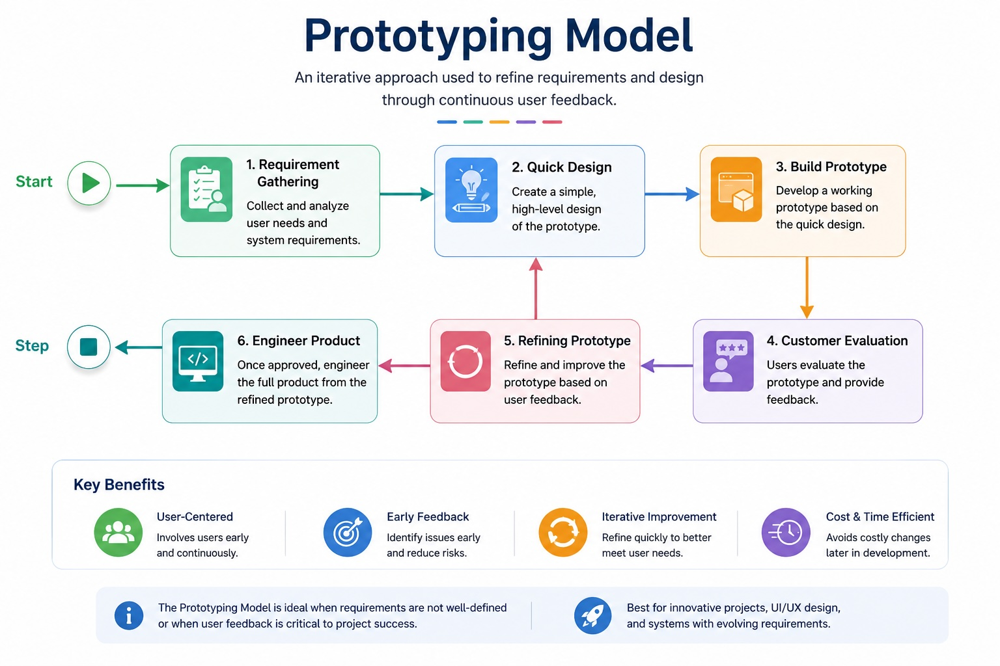

Prototyping Model
A prototype is built early to learn what users actually need before committing to the complete solution.
Explain how prototyping reduces requirements uncertainty, distinguish throwaway from evolutionary prototyping, and recognize why a prototype is primarily a learning instrument.
Prototype to learn before you commit
When requirements are uncertain, build an early model, let users react to it, and use feedback to refine what the system should become.

Study the loop: an initial understanding becomes a prototype; user evaluation exposes uncertainty; feedback refines the requirements before full-scale engineering commitment.
What happens after the learning?
Build quickly to explore requirements or usability, capture the learning, then discard it and engineer the production solution properly.
Start with a working version and deliberately improve it until it grows into the production system.
Clinic appointment interface
A clickable prototype reveals that users need family-member booking, clearer slot filters, and a simpler cancellation path before backend implementation begins.
Prototype to learn. A prototype may look complete long before the engineering behind it is production-ready.
The section below is added clarification to make the concept easier to understand and revise.
Connect it to engineering practice
Use prototyping when the biggest risk is not knowing what users really need.
Explain the feedback loop and distinguish throwaway from evolutionary prototyping.